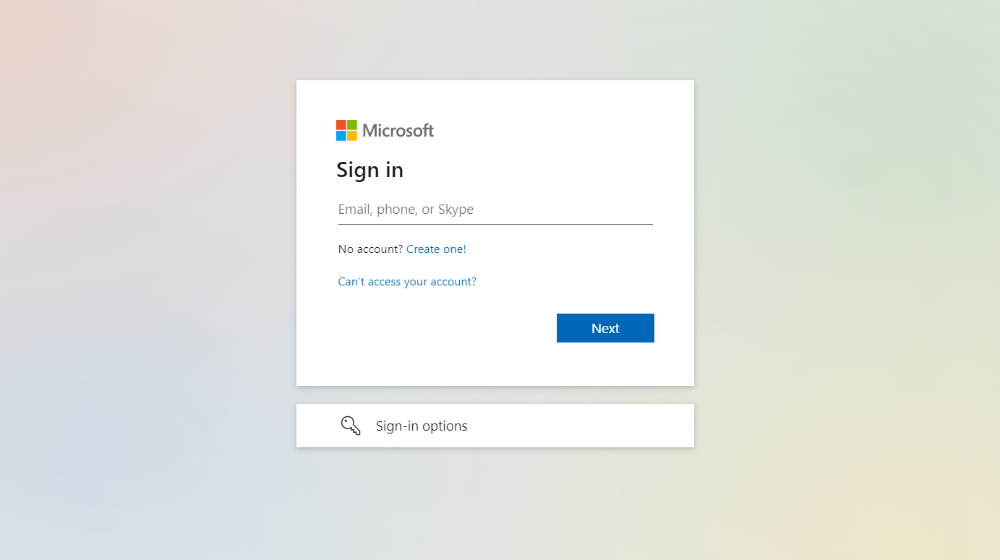
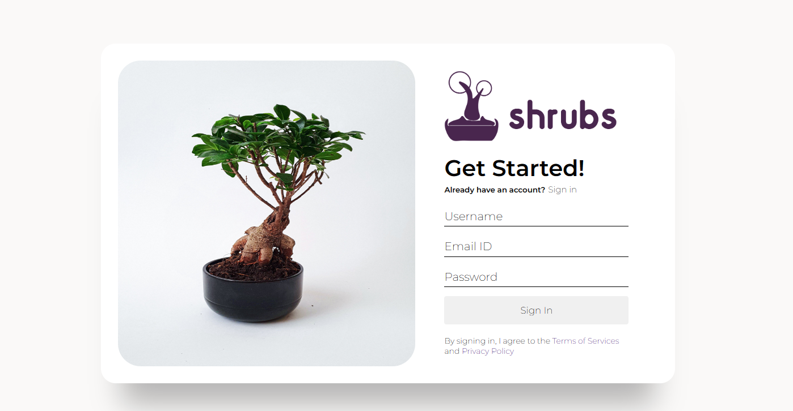

SHRUBS / THE RESEARCH / HOME
Shrubs is a bonsai plant website that offers a wide selection of high-quality
bonsai trees and accessories. With a focus on customer satisfaction, Shrubs is
dedicated to providing a user-friendly shopping experience for bonsai enthusiasts of all levels.
The website features a comprehensive collection of bonsai trees, including popular species like
juniper, ficus, and bougainvillea, as well as rare and exotic varieties. Customers can choose
from a
range of sizes and styles, including tabletop bonsai, small bonsai trees, and large outdoor
bonsai
trees.
The online shopping process at Shrubs is quick and secure, and customers can have their bonsai
trees
and accessories delivered directly to their doorstep. With its extensive selection of bonsai
trees
and exceptional customer service, Shrubs is the perfect destination for bonsai enthusiasts
looking
for high-quality plants and accessories.
The home page features a parallax effect providing an interactive user experience. The page
serves as an overview of different pages of the website including product page, blog page and about us page.
To get access to the different pages we must click on the sign up if we don't have an account
and if we already have an account we can log in easily.
GitHub Copilot, a code suggestion tool, provides automated code completions and in-the-moment
suggestions while a user is coding. It uses machine learning to recommend code snippets and
improves over time as it learns the user's coding habits. The tool is designed to make coding simpler
for developers and to speed up the writing of code. GitHub Copilot, to put it briefly, is a real-time
code recommendation tool that aids developers in producing better code.
1. Both the pages have used animation to show data in a fascinating way.
Github Copilot:
Shrubs:
2. Both the pages have button that redirect us to a specific page that is linked in it.
Github Copilot:
Shrubs:

1. Github copilot doesn't have a parallax component. Whereas, our page has a parallax component to it is placed in the very first
section of the page.
Github copilot:
Shrubs:
2. Github copilot has a feedback section but our page has our teams section to introduce our teams in brief.
Github copilot:
Shrubs: